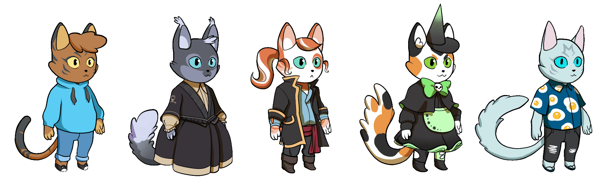
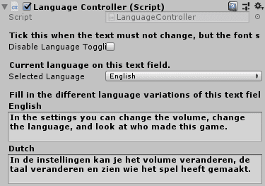
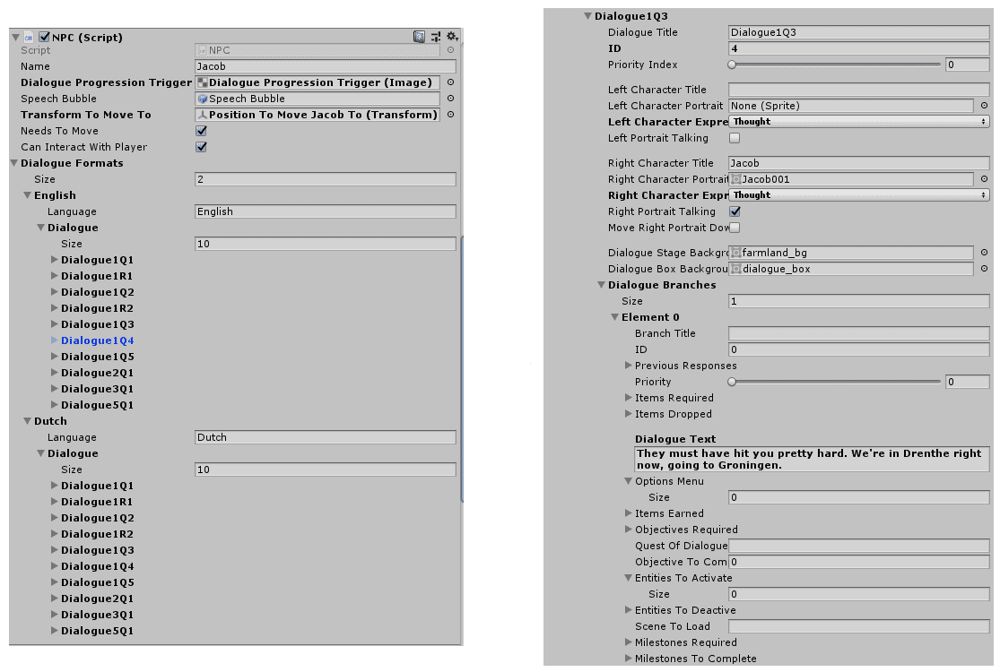

Nikolay's Games
Below, you will find some of the games that I have worked on during my free time and a few others created during my studies. Aside from that, I have also worked on games at &ranj where I interned for five months but they will not be displayed publicly. The source code for all games can be found on my Github .
This portfolio is strictly for game development. Web development or other projects that I have done can only be found on my Github or by asking me personally. Games I have worked on were made using Unity3D, Phaser v2/3, CreateJS, Love2D and Twine. The page of each game discusses some development aspects of it and talks about the choices I made, or didn't. If you want to try each game, there's a link at the top of each game's page.
Morgan Travels Through Time
Uploaded on 11th September, 2020. Read time: 9m
Game Page: https://github.com/AArtlone/Morgan-Travels-Through-Time
Morgan reist door de tijd is a game series about a child from 2019 who accidentally ends up in 1672 as they followed the neighbor's kid. Morgan needs to find their way back to their own time. In their quest to get back to 2019 they must also prevent the future from being changed by the neighbor's kid. The first installment of the game series, called Morgan & Bommen Berend , introduces the player to Morgan’s story and takes them along on a journey through the events of Bommen Berend.

Morgan was by far the most complex game I worked on during university. It included minigames, multi-language support, character customization, achievements, branching dialogue with a lot of freedom to edit each passage and the list goes on. At that point I had little experience and research into third-party software that could have helped with the development process. I'll touch on some of the systems I worked on in the game that I think are worth highlighting in this page. Firstly, I had a lot of fun working on the character customization and it was the first system I started to develop:
The clothing comes from the player's inventory and the rest is earned by playing the game, and he can try the clothing out in this customization screen. The clothing is an important element of the game since it teaches children (our target audience) about the time period the game takes place. Not for all the clothing of course, but some of the clothing would have been necessary in order to enter specific levels.

The second topic I want to touch on is the multi-language support. Although not really special, It was my first time making one and I think my approach was not ideal in hindsight so I learned from implementing it. Our game was meant for Dutch people, but we wanted all sorts of people to be able to play the game, so we needed to add English. It's also easier to develop the game if its in English first as well, it makes sense from a development perspective and for the team. The language of the game is contained in the SettingsManager and each text element in the current scene keeps a reference to it. Whenever the player toggles the language, the text elements' LanguageController class will update the label to the string assigned in its field for that language:

public void ChangeLanguage(string languageToToggle) {
switch (languageToToggle) {
case "English":
_settingsManager.Language = "English";
foreach (LanguageController textLabel in _settingsManager.LanguageControllers)
{
textLabel?.LoadLanguage(LanguageController.Language.English);
}
break;
case "Dutch":
_settingsManager.Language = "Dutch";
foreach (LanguageController textLabel in _settingsManager.LanguageControllers)
{
textLabel?.LoadLanguage(LanguageController.Language.Dutch);
}
break;
}
}
This worked really good, but if I were to get a second chance, I would've kept all the translations in a separate file that references each LanguageController's name for that text element and updated its label from there. That's much safer and doesn't rely heavily on Unity's editor. The dialog system was by far the biggest hassle as it was the most complex and tied to the progression of the story. Because I wasn't very experienced back then, I wanted to learn what it was like to implement a dialogue system myself.
Everything is terrible when I looked back on the programming and design of the system. I'm surprised I got it to work in the first place. Each passage allows you to change the appearance and expressions of the characters in the dialogue but transitioning from one dialogue to the next based on previous choices and other player factors was terrible to implement. And on top of that, everything was done in the editor (what the f***).

It worked really well on the outside, but debugging and testing it was an absolute mess and getting it to work well took a lot longer than it should've. I learned a lot about what not to do, and again, I should've done everything externally (separated from the editor). I think the rest of the game's aspects weren't that significant enough to discuss here so its best you try the game and look at the source code if you're really curious.
... project created by
Nikolay Ivanov
Lead programmer for the project and created a one-pager (its on GitHub) for the franchise.
Roger Recaldini
Together with Martin, responsible for all the visuals of the game. Focused on characters, all the UI, character customization and foregrounds.
Artem Stolyga
Programmer for the project, also responsible for some of the minigames and story progression.
Martin Jawahier
Together with Roger, responsible for all the visuals of the game. Focused on the backgrounds and hidden puzzle.
Natalie Smit
Responsible for concepting, brainstorming, and the design and writing of the game.
Youri Mulder
Responsible for the design of the game and concepting/ideation for the minigames.